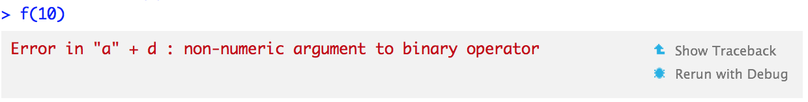

Chapitre 6 Programmation fonctionnelle avec R et Rstudio
A ce stade, vous savez qu’il est recommandé de:
- Structurer les dossiers sous forme de projet
Rstudio; - Utiliser
gitpour le contrôle de version; - Utiliser
Rmarkdownpour rédiger des documents.
La seconde partie du cours vise à introduire à l’utilisation des fonctions et au développement de package. Un package est une organisation particulière de l’ensemble des programmes, données et documentations constituant un projet Rstudio. La construction d’un projet autour d’un ou plusieurs packages est la meilleure manière d’assurer la reproducibilité et la transparence des traitements statistiques (sous condition d’avoir accès aux mêmes données évidemment). Il s’agit également d’une approche appropriée pour le travail collaboratif car cela rend le code plus lisible, bien documenté et plus propice à des évolutions futures.
La seconde partie du cours adopte la structure suivante, tournée autour de la notion de programmation fonctionnelle:
- Introduction à l’utilisation des fonctions en
R; - Présentation et constitution d’un premier package.
Le guide des bonnes pratiques propose des règles complémentaires pour renforcer la reproductibilité des programmes. Une partie des exemples et illustration de se cours proviennent des ouvrages de Wickham (2019) et Wickham (2015)
6.1 Introduction
To understand computations in R, two slogans are helpful:
- Everything that exists is an object.
- Everything that happens is a function call.
John Chambers
R est, dans son essence, un langage de programmation fonctionnelle. L’utilisation de fonctions est ainsi la manière privilégiée de développer un programme en R. C’est pourquoi il est essentiel de bien comprendre la manière dont elles fonctionnent et interagissent avec l’environnement de l’utilisateur pour développer des programmes fiables et reproductibles.
Construire un projet autour d’un enchaînement de fonctions est une pratique qui permet de réduire les risques de bug (en identifiant mieux leur origine) et, surtout, assure un code plus flexible et reproductible. Cela renvoie au paradigme informatique du “do not repeat yourself”.
“Every piece of knowledge must have a single, unambiguous, authoritative representation within a system”
Dave Thomas and Andy Hunt, The Pragmatic Programmer
Cette approche nous intéresse particulièrement car elle rend le code plus clair, plus robuste, plus facile à répliquer et à faire évoluer. Néanmoins, adopter une approche de programmation fonctionnelle en R est un bon début mais ne suffit pas. Le fait qu’un code soit fonctionnel sur l’ordinateur de celui qui l’a développé n’assure pas qu’un autre utilisateur soit en mesure de le faire tourner. La source la plus commune d’erreur est que les environnements ne coïncident pas (exemple: il manque un package utilisé par le code). Pour assurer un code fonctionnel lors d’un partage, ou même lors d’un changement d’environnement de travail, il est important de comprendre la manière dont R gère les objets, environnements et dépendances. Cela nous amène, grosso modo, ainsi à structurer le chapitre de la manière suivante:
- Rappels théoriques sur les objets en R
- Construction de premières fonctions en R avec une adoption précoce de bonnes pratiques
- Compréhension de la manière dont
Rgère les objets dans les différents environnements de travail disponibles
La continuité naturelle de ce chapitre est l’initiation au développement de packages.
6.2 Rappels sur les objets en R
Il y a deux points essentiels à retenir sur la façon dont R traite les objets:
- Comment
Rassocie les objets et les noms; - Comment
Rmodifie les objets.
6.2.1 Distinguer noms et valeurs
La première distinction importante est celle entre un objet et son nom. A ce stade, vous devriez être habitué à l’assignation:
x <- c(1, 2, 3)On serait tenté de lire “je crée un objet appelé ‘x’ contenant les valeurs 1,2 et 3”. En réalité, R procède de la manière suivante:
Rcrée un vecteur de valeursc(1, 2, 3);Rlie (binds) ce vecteur à un nom, icix.
Autrement dit, l’objet/la valeur n’a pas de nom ; c’est le nom qui a une valeur. L’opérateur assignation <- crée donc un lien entre un nom et une valeur. Un nom est une référence à une valeur: cela évite que le code ci-dessous
y <- xcrée une copie (mobilisant de la mémoire) d’un objet déjà existant (x). Cette assignation crée simplement une référence supplémentaire pour accéder au vecteur c(1,2,3), en liant ce vecteur au nom y.
En revanche, R duplique l’objet lorsqu’on modifie un nom qui y fait référence. Le code ci-dessous lie x à y puis modifie y:
x <- c(1, 2, 3)
y <- x
y[[3]] <- 4On pourrait penser que cette opération a modifié x, mais ce n’est pas le cas:
x## [1] 1 2 3Alors que la valeur associée à y a changé, l’objet original n’a pas changé. R a simplement créé un nouvel objet le vecteur c(1,2,4), et lui a associé le nom y.
6.2.2 Copier des objets en R
Les objets R sont en principe non-modifiables (immutable). Parler d’immutabilité à propos des objets R peut paraître surprenant puisqu’on peut apparemment ajouter des élements à un objet R:
a <- list()
a[[1]] <- "je remplis ma liste"
a## [[1]]
## [1] "je remplis ma liste"En réalité, R a dupliqué temporairement a (copy) et ensuite modifié cet objet avant le ré-assigner au nom a (modify). Ce comportement est appelé copy-on-modify. Cette approche rend le langage R très flexible en permettant, par exemple, de faire évoluer la classe d’un objet (à partir d’une réassignation). Par exemple, le code suivant transforme l’objet lié au nom a de vector en data.frame:
a <- c(1,2,3)
a <- data.frame("a" = a)
class(a)## [1] "data.frame"6.3 Rappels sur les fonctions
Les fonctions en R sont très bien résumées par la définition suivante, issue de wikipedia:
En informatique, une routine est une entité informatique qui encapsule une portion de code (une séquence d’instructions) effectuant un traitement spécifique bien identifié (asservissement, tâche, calcul, etc.) relativement indépendant du reste du programme, et qui peut être réutilisé dans le même programme, ou dans un autre. Dans ce cas, on range souvent la routine dans une bibliothèque pour la rendre disponible à d’autres projets de programmation, tout en préservant l’intégrité de son implémentation.
Les routines permettent de diviser un problème en décomposant le programme à réaliser en portions de code plus faciles à produire, à utiliser, à gérer et à entretenir. Les instructions réalisant la routine sont encapsulées à l’intérieur de celle-ci et le programmeur peut faire appel à la routine sans se préoccuper des détails internes à celle-ci ; la routine joue le rôle d’une boite noire dans les routines qui l’emploient.
Formellement, on peut décomposer une fonction en trois parties:
- Arguments (ex:
formals(lm)): la liste des arguments qui contrôlent l’appel à une fonction - Corps (ex:
body(lm)): les commandes internes à la fonction - Environnement (ex:
environment(lm)): le contexte qui détermine comment la fonction trouve des valeurs associées aux noms évoqués. Dans le cas deR, ces noms peuvent renvoyer à tout type d’objet: données, variables, fonctions, packages…
Alors que les arguments et le corps de la fonction sont définis explicitement, l’environnement est lui défini implicitement, selon le contexte dans lequel est évoqué la fonction.
f02 <- function(x, y) {
# Un commentaire
x + y
}
formals(f02)## $x
##
##
## $ybody(f02)## {
## x + y
## }environment(f02)## <environment: R_GlobalEnv>6.3.1 Portée (scoping) d’une fonction
Comme on l’a vu, l’assignation est l’acte d’associer un nom à une valeur. Le scoping (portée) est l’action de trouver une valeur associée à un nom.
Par exemple, que va renvoyer le code suivant: 10, 20, 25 ?
x <- 10
g01 <- function() {
x <- 20
x
}
g01()## [1] 20Une bonne compréhension de la portée des fonctions est essentiel pour écrire des fonctions réplicables.
6.3.2 Noms masqués
Le principe de base de la portée est que les noms définis au sein d’une fonction masquent les noms définis en dehors. Le code suivant montre un exemple de cette régle: que renvoie la fonction suivante?
x <- 10
y <- 20
g02 <- function() {
x <- 1
y <- 2
c(x, y)
}
g02()## [1] 1 2Si R ne trouve pas un nom dans une fonction, il cherchera celui-ci dans un environnement situé un niveau au-dessus (cf. la section sur les environnements).
x <- 2
g03 <- function() {
y <- 1
c(x, y)
}
g03()## [1] 2 1# La commande ci-dessous ne change pas la valeur précédente de y
y## [1] 20Cette règle s’appliquera de la même manière pour les fonctions emboîtées: R cherche d’abord dans l’environnement de la fonction, puis dans celui de la fonction au-dessus et ainsi de suite jusqu’à l’environnement global. S’il ne trouve toujours pas le nom recherché (par exemple une fonction sum), R finira par chercher dans la liste des packages chargés.
Un bon exemple de portée d’une fonction est le suivant:
# On reprend le vecteur a
a <- c(1,2,3)
g11 <- function() {
if (!exists("a")) {
a <- 1
} else {
a <- a + 1
}
a
}
g11()## [1] 2 3 4g11()## [1] 2 3 4Pourquoi g11() retourne-t-elle toujours la même valeur ? C’est parce que chaque fois qu’une fonction est appelée, un nouvel environnement est créé pour héberger son exécution. Une fonction est donc incapable de connaître les noms qui ont pu être créés par une fonction passée sans return.
6.3.3 Portée et évaluation paresseuse
La portée permet de lier logiquement des objets entre eux, mais ne permet pas de déterminer quand ce lien prendra place (on parle d’évaluation paresseuse ou lazy evaluation: on donne un plan à R pour lier les objets, on ne lui dit pas encore quand la commande sera exécutée). R associe les noms aux valeurs quand la fonction est exécutée, et pas à sa création.
Dans le cadre de l’évaluation paresseuse, ce qui permet à R de lier les objets et environnements entre eux est la promesse (promise). Elle comprend trois éléments:
- Une expression, comme
x + y, qui amènera à de futurs calculs; - Un environnement, où l’expression sera évaluée, i.e. l’environnement où la fonction est évaluée;
- Une valeur qui est calculée et gardée en mémoire au sein de l’environnement (de manière à éviter de faire deux fois le même calcul si le même plan est appelé deux fois dans le même environnement).
L’évaluation paresseuse a deux grandes conséquences sur le fonctionnement de R.
Premièrement, l’output d’une fonction peut différer selon les objets hors de l’environnement de la fonction (ces objets sont parfois appelés variables globales parce qu’ils affectent l’ensemble des fonctions, par opposition aux variables locales qui sont propres à une fonction, et n’existent que dans l’environnement d’exécution de cette fonction).
En voici un exemple simple:
g12 <- function() x + 1
x <- 15
g12()## [1] 16x <- 20
g12()## [1] 21La modification de x (variable globale) change donc l’output de la fonction. Une manière de rapidement savoir quelles sont les variables globales qui peuvent avoir un effet sur les résultats est d’utiliser la fonction codetools::findGlobals(). Cette fonction liste toutes les dépendances externes appelées dans une fonction:
codetools::findGlobals(g12)## [1] "+" "x"Deuxièmement, les arguments d’une fonction en R ne sont évalués qu’au moment où il est nécessaire de connaître leur valeur pour continuer l’exécution du programme. Par exemple, le code suivant ne provoquera pas d’erreur car x n’est jamais utilisé et n’est donc jamais évalué:
h01 <- function(x) {
10
}
h01(stop("This is an error!"))## [1] 10C’est très pratique car cela permet de créer des fonctions qui peuvent faire des opérations très différentes selon le type d’argument. Par exemple, créez une fonction add(x,y) qui
- ajoute
xetysixetysont numériques; - concatène
xavecysixetysont des chaînes de caractères 3; - renvoie l’erreur “‘x’ et ‘y’ ne sont pas de même nature” si
xetyne sont pas de même type.
add <- function(x,y){
if ((class(x) == "numeric") & (class(y) == "numeric")){
x + y
} else if ((class(x) == "character") & (class(y) == "character")){
paste0(x,y)
} else{
stop("'x' et 'y' ne sont pas de même nature")
}
}
add(1,2)## [1] 3add("a","b")## [1] "ab"add(1,"b")## Error in add(1, "b"): 'x' et 'y' ne sont pas de même nature6.4 Définir des fonctions en R
Après ces rappels sur les objets et les fonctions en, nous allons maintenant voir comment on définit des fonctions avec R.
6.4.1 Un exemple simple pour commencer
Supposons qu’on dispose d’une table de données qui utilise le code −99 pour représenter les valeurs manquantes. On désire remplacer l’ensemble des −99 par des NA.
# On fixe la racine pour être sûr de tous avoir le même dataset
set.seed(1014)
# On créé un dataframe
df <- data.frame(replicate(6, sample(c(1:10, -99), 6, rep = TRUE)))
names(df) <- letters[1:6]
df## a b c d e f
## 1 7 5 -99 2 5 2
## 2 5 5 5 3 6 1
## 3 6 8 5 9 9 4
## 4 4 2 2 6 6 8
## 5 6 7 6 -99 10 6
## 6 9 -99 4 7 5 16.4.1.1 Les défauts d’un code sans fonction
Un premier jet de code pourrait prendre la forme suivante:
# Dupliquer les données
df2 <- df
# Remplacer les -99 par des NA
df2$a[df2$a == -99] <- NA
df2$b[df2$b == -99] <- NA
df2$c[df2$c == -99] <- NA
df2$d[df2$d == -99] <- NA
df2$e[df2$e == -98] <- NA
df2$f[df2$g == -99] <- NA
df2## a b c d e f
## 1 7 5 NA 2 5 2
## 2 5 5 5 3 6 1
## 3 6 8 5 9 9 4
## 4 4 2 2 6 6 8
## 5 6 7 6 NA 10 6
## 6 9 NA 4 7 5 1Quelles sont les choses qui vous dérangent dans le code ci-dessus? Indice: regardez précisément le code et le dataframe (indice: surveillez la colonne e).
On peut noter au moins deux problèmes:
- Le code est long et répétitif, ce qui nuit à sa lisibilité;
- Le code est très dépendant de la structure des données (nom et nombre de colonnes) et doit être adapté dès que celle-ci évolue;
- On a introduit une erreur humaine dans le code, difficile à détecter, dans l’instruction
df2$e[df2$e == -98] <- NA.
6.4.1.2 Une première fonction
La tâche ici étant identique pour toutes les colonnes, on a envie de mettre en place une structure générale, qu’on appliquerait n fois, qui éviterait ce problème (quitte à avoir une erreur, mieux vaut s’en rendre compte en la faisant systématiquement) et rendrait le code plus concis.
Pour cela, nous allons construire une fonction avec R. Cette fonction prendra la forme suivante:
# Définir une fonction
nom_fonction <- function(arg1,arg2,...,argN){
# Instructions
# ...
# Retourner le resultat
return(mon_output)
}On voit dans la première version de notre code qu’il y a une structure commune à toutes nos lignes de la forme .[. == -99] <- NA. Cette structure va servir de base à notre fonction, en vue de généraliser le traitement que nous voulons faire.
Ecrivez un exemple de fonction fix_missing qui généralise, simplement, ce travail de nettoyage. Elle prendra en entrée x (un vecteur) et retourne ce vecteur avec les valeurs manquantes corrigées. Voici la solution:
fix_missing <- function(x) {
x[x == -99] <- NA
x
}On peut l’appliquer avec le code suivant:
df2 <- df
df2$a <- fix_missing(df2$a)
df2$b <- fix_missing(df2$b)
df2$c <- fix_missing(df2$c)
df2$d <- fix_missing(df2$d)
df2$e <- fix_missing(df2$e)
df2$f <- fix_missing(df2$f)
df2## a b c d e f
## 1 7 5 NA 2 5 2
## 2 5 5 5 3 6 1
## 3 6 8 5 9 9 4
## 4 4 2 2 6 6 8
## 5 6 7 6 NA 10 6
## 6 9 NA 4 7 5 1# On va comparer au resultat donc on le garde
df2_good <- df2Cette seconde version du code est meilleure que la première version, car on a réglé le problème d’erreur humaine (il n’est plus possible de taper -98 au lieu de -99). Mais le code reste long et répétitif, et n’élimine pas encore toute possibilité d’erreur, car il est toujours possible de se tromper dans le nom des variables. Par exemple, l’erreur typographique ci-dessous reste difficile à repérer:
df2 <- df
# On se trompe à nouveau
df2$a <- fix_missing(df2$a)
df2$b <- fix_missing(df2$b)
df2$c <- fix_missing(df2$c)
df2$d <- fix_missing(df2$d)
df2$d <- fix_missing(df2$d)
df2$f <- fix_missing(df2$e)
df2## a b c d e f
## 1 7 5 NA 2 5 5
## 2 5 5 5 3 6 6
## 3 6 8 5 9 9 9
## 4 4 2 2 6 6 6
## 5 6 7 6 NA 10 10
## 6 9 NA 4 7 5 5La prochaine étape est ainsi d’éliminer ce risque d’erreur en combinant deux fonctions (ce qu’on appelle combinaison de fonctions). La première fix_missing() sert à régler le problème sur un vecteur. La seconde généralisera ce procédé à toutes les colonnes. Comme R est un langage vectoriel, c’est une approche fréquente de construire des fonctions sur des vecteurs et les appliquer ensuite à plusieurs colonnes.
6.4.1.3 Combiner des fonctions
La famille des fonctions apply est conçue pour appliquer une même fonction à plusieurs objets. Ces fonctions font partie du langage R de base et sont ce qu’on appelle des fonctionnelles car elles prennent une fonction comme argument. La plus puissante des fonctions apply est la fonction lapply qui permet de stocker le résultat sous forme de liste. Il est préférable d’utiliser lapply plutôt que les autres fonctions apply (pour éviter des problèmes de conversion de type de données).
Voici un exemple très simple d’utilisation de lapply:
# Définir une fonction
ajouter1 <- function(x){
y <- x + 1
return(y)
}
# Appliquer cette fonction à une liste
x <- list(1, 2, 3, 4)
lapply(x, ajouter1)## [[1]]
## [1] 2
##
## [[2]]
## [1] 3
##
## [[3]]
## [1] 4
##
## [[4]]
## [1] 5Nous allons maintenant utiliser lapply pour améliorer notre code.
Il est possible d’appliquer lapply à un dataframe car un dataframe est en fait une liste de vecteurs (les colonnes du dataframe). Toutefois, comme lapply renvoie une liste, on a besoin d’utiliser une petite astuce pour s’assurer que la sortie de la fonction prenne la forme d’un dataframe et non d’une liste. A la place d’assigner le résultat sous la forme df <- lapply(.....) on va faire df[] <- lapply(...). Ecrivez la boucle lapply permettant d’appliquer fix_missing a l’ensemble des colonnes du dataframe:
df2 <- df
# Définir une fonction
fix_missing <- function(x) {
x[x == -99] <- NA
x
}
# Appliquer la fonction à toutes les colonnes du dataframe
df2[] <- lapply(df2, fix_missing)
df2## a b c d e f
## 1 7 5 NA 2 5 2
## 2 5 5 5 3 6 1
## 3 6 8 5 9 9 4
## 4 4 2 2 6 6 8
## 5 6 7 6 NA 10 6
## 6 9 NA 4 7 5 1Cette troisième version du code a plusieurs avantages sur les deux autres versions:
- Elle est plus concise et plus lisible;
- Si on a un changement de code pour les valeurs manquantes, il suffit de le mettre à un seul endroit;
- Elle fonctionne quels que soient le nombre de colonnes et le nom des colonnes;
- On ne peut pas traiter une colonne différemment des autres par erreur.
De plus, le code est facilement généralisable. Par exemple, à partir de la même structure, écrire le code qui permet de ne traiter que les colonnes a,b et e.
df2 <- df
df2[c("a","b","e")] <- lapply(c("a","b","e"), function(col) fix_missing(df2[col]))Cette approche de composition de fonctions est très puissante et explique la grande flexibilité du langage R. Ecrire des fonctions simples et les composer dans une ou plusieurs fonctions maîtres est également très utile dans un travail collaboratif car cela permet de décomposer un traitement complexe en tâches simples et de mieux en comprendre le déroulement.
Nous avons vu qu’il est facile de définir une fonction et de composer des fonctions en R. Toutefois, les fonctions que nous avons définies jusqu’à maintenant n’avaient qu’un seul argument. Nous allons voir maintenant qu’il est facile de généraliser cette approche, et de définir des fonctions avec de multiples arguments.
6.4.2 Créer des fonctions complexes
6.4.2.1 Fonctions à plusieurs arguments
Comment faire maintenant si on désire autoriser d’autres valeurs que -99 ? Notre fonction précédente prenait comme donnée que la valeur -99 désignait les valeurs manquantes. On peut maintenant en faire un paramètre d’une fonction plus générale qui serait de la forme fix_missing <- function(x, na.value), dans laquelle x désigne le dataframe et na.value la valeur codant les valeurs manquantes. Ecrire cette fonction et l’appliquer, dans un premier temps, uniquement à la colonne df$a:
fix_missing <- function(x, na.value) {
x[x == na.value] <- NA
x
}
fix_missing(x = df$a, na.value = -99)## [1] 7 5 6 4 6 9On peut omettre les noms d’arguments en R dans l’appel d’une fonction (fix_missing(df$a,-99) fonctionne). Néanmoins, il s’agit d’une pratique dangereuse qu’il vaut mieux éviter:
- En l’absence du nom des arguments,
Rdétermine à quels arguments renvoientdf,-99en fonction de l’ordre. Pour les fonctions qui prennent de nombreux arguments, on peut facilement inverser deux arguments ce qui provoquera une erreur ou - pire (!) - un résultat différent de celui qui est attendu sans erreur; - Un appel de fonctions sans le nom des arguments est plus compliqué à débugger car il faut aller vérifier les arguments dans l’aide ou le code source pour savoir ceux dont il est question.
Mieux vaut donc être explicite et écrire les appels de fonctions sous la forme fix_missing(x = df["a"], na.value = -99). Avec l’autocomplétion de Rstudio, ce n’est pas vraiment plus long à écrire.
6.4.2.2 Composition de fonctions à plusieurs arguments
Comment combiner la fonction que nous venons de définir avec lapply? La grammaire de la fonction lapply est un peu déroutante lorsqu’on la combine avec une fonction à plusieurs arguments. Imaginons qu’on souhaite appliquer la fonction f(x, y) à la liste X et en donnant à l’argument y la valeur 2. L’appel de fonction s’écrit: lapply(X, f, y = 2).
La combinaison de lapplyavec la fonction que nous avons définie précédemment s’écrit donc:
df2 <- df
df2[] <- lapply(df2, fix_missing, na.value = -99)
df2## a b c d e f
## 1 7 5 NA 2 5 2
## 2 5 5 5 3 6 1
## 3 6 8 5 9 9 4
## 4 4 2 2 6 6 8
## 5 6 7 6 NA 10 6
## 6 9 NA 4 7 5 1Imaginons maintenant qu’un code supplémentaire de valeur manquante doive être introduit. Supposons, en supplément de -99, que les valeurs manquantes soient aussi codées 10. Comment feriez-vous selon le plan suivant:
- Créer une nouvelle fonction
fix_missing2 - L’appliquer dans un premier temps à une seule colonne pour tester
- Utiliser
lapplypour remplacer toutes les valeurs-99et10dans le dataframe
# Définir la fonction
fix_missing2 <- function(x, na.value) {
x[x %in% na.value] <- NA
return(x)
}
# Appliquer la fonction à une colonne
fix_missing2(x = df$d, na.value = c(-99,10))## [1] 2 3 9 6 NA 7# Appliquer la fonction à toutes les colonnes avec lapply
df2 <- df
df2[] <- lapply(df2, fix_missing2, na.value = c(-99,10))
df2## a b c d e f
## 1 7 5 NA 2 5 2
## 2 5 5 5 3 6 1
## 3 6 8 5 9 9 4
## 4 4 2 2 6 6 8
## 5 6 7 6 NA NA 6
## 6 9 NA 4 7 5 1Comment faire maintenant si on désire autoriser d’autres valeurs que -99 ? Il faut utiliser une fonction plus générale, avec deux arguments. Il suffit d’une transformation mineure de la fonction fix_missing2 pour autoriser plusieurs valeurs possibles.
6.4.3 Créer une fonction vraiment complexe
Nous allons généraliser encore une fois le traitement. Imaginons que toutes les variables ne soient pas codées de la même manière. Pour simplifier, réduisons le problème aux variables a, b et c. Imaginons que les valeurs manquantes soient indiquées par les valeurs 1 à 3 pour la variable a, par les valeurs 4 à 6 pour la variable b et par les valeurs 7 à 10 pour la variable c. Comment utiliser notre fonction fix_missing2 dans ce cas?
Une manière appropriée de traiter ce problème est de stocker ces formats sous forme de liste. L’argument sera ainsi celui-ci:
codes_na <- list("a" = 1:3, "b" = 4:6, "c" = 7:9)Dans un premier temps, effectuez ceci avec un lapply:
df2 <- df
df2[names(codes_na)] <- lapply(names(codes_na), function(variable) fix_missing2(df2[,variable], na.value = codes_na[[variable]]))
df2## a b c d e f
## 1 7 NA -99 2 5 2
## 2 5 NA 5 3 6 1
## 3 6 8 5 9 9 4
## 4 4 2 2 6 6 8
## 5 6 7 6 -99 10 6
## 6 9 -99 4 7 5 1Maintenant, généralisez en créant une fonction à partir de ce code
fix_multiple_missing <- function(data, codes_na){
data[names(codes_na)] <- lapply(names(codes_na), function(variable) fix_missing2(data[,variable], na.value = codes_na[[variable]]))
return(data)
}
fix_multiple_missing(df, codes_na = list("a" = 1:3, "b" = 4:6, "c" = 7:9))## a b c d e f
## 1 7 NA -99 2 5 2
## 2 5 NA 5 3 6 1
## 3 6 8 5 9 9 4
## 4 4 2 2 6 6 8
## 5 6 7 6 -99 10 6
## 6 9 -99 4 7 5 16.4.4 [Avancé] Méthodes alternatives
Nous avons présenté la manière dont la fonction lapply permet de généraliser l’application d’une fonction. On présente ici deux manières alternatives de résoudre ce même problème, l’une basée sur le tidyverse, l’autre qui restructure les données pour exploiter la vectorisation:
purrr::mapse comporte de manière très proche delapply- On transforme les données avec
reshape2et applique une fonction par groupe.
Un peu plus bas, vous trouverez une approche alternative qui évite le lapply mais qui implique d’utiliser le package reshape2.
Comme R est un langage vectoriel, de manière générale, les dataframes sous format long sont plus maniables que les dataframes sous format wide lorsqu’on veut leur imposer des opérations vectorielles.
# METHODE 2
df3 <- df
df3[] <- lapply(df3, function(x) ({
x[x == -99] <- NA
return(x)
}))
identical(df2,df3)## [1] FALSE# Approche équivalente avec purrr::map
df2_map <- df2
# CommOM: je commente la ligne suivante car elle plante depuis que je l'ai déplacée
df2_map[] <- purrr::map(df2_map,fix_missing, na.value = -99)
df2_map## a b c d e f
## 1 7 NA NA 2 5 2
## 2 5 NA 5 3 6 1
## 3 6 8 5 9 9 4
## 4 4 2 2 6 6 8
## 5 6 7 6 NA 10 6
## 6 9 NA 4 7 5 1Le dernier bloc de code montre une manière équivalente de procéder dans le cadre du tidyverse à partir de la fonction purrr::map à la place de lapply4
# ou approche équivalente avec purrr::map
df2_map <- df
# CommOM: je commente la ligne suivante car elle plante depuis que je l'ai déplacée
# df2_map[c("a","b","e")] <- purrr::map(c("a","b","e"), function(col) fix_missing(df2_map[col]))
identical(df2,df2_map)## [1] FALSEA noter qu’il n’est pas obligatoire d’associer un nom à une fonction: on appelle cela une fonction anonyme (équivalent des fonctions lambda en python). C’est une démarche fréquente dans les commandes lapply, par exemple lapply(mtcars, function(x) length(unique(x))).5
6.5 Utiliser les outils de débuggage de Rstudio
Comme on l’a vu, les fonctions sont précieuses car elles permettent de fiabiliser, d’automatiser et de documenter les traitements, mais il est parfois difficile de comprendre pourquoi une fonction bute sur une erreur. C’est là que Rstudio propose des outils de débuggage très utiles.
6.5.1 Toutes les erreurs ne se valent pas!
Une fonction peut renvoyer une erreur pour deux raisons, avec des interprétations différentes.
- L’erreur est prévue par la fonction (
bug by design): il est possible d’introduire dans une fonction des conditions logiques qui renvoient une erreur si les conditions d’exécution de la fonction ne sont pas vérifiées (instructionstop). Cette méthode est très utilisée en programmation défensive, paradigme de programmation où on essaie d’assurer le fonctionnement continu d’un programme, en faisant en sorte qu’un code échoue d’une manière pré-determinée même si l’origine de l’erreur ne pouvait pas être anticipée lors de la conception. Un des principes-clés de ce paradigme est “l’erreur rapide”: dès qu’on remarque une potentielle erreur, on la signale.
Par exemple, si on ne connaît pas le fonctionnement de la fonction log, et donc ne sait pas qu’elle fonctionne (mais renvoie un NaN) avec des nombres négatifs, on peut adopter une approche de programmation défensive et écrire une condition qui renvoie une erreur si l’argument fourni est négatif:
lance_erreur <- function(x){
if (x<=0) stop("J'ai peur que les nombres négatifs provoquent une erreur")
return(log(x))
}
lance_erreur(2)## [1] 0.6931472lance_erreur(-2)## Error in lance_erreur(-2): J'ai peur que les nombres négatifs provoquent une erreurLa programmation défensive n’est pas une pratique obligatoire en équipe, il s’agit plutôt d’un principe de prudence. Cette approche implique plus de travail pour le programmeur mais rend le débuggage et la collaboration plus efficace car les utilisateurs peuvent identifier et isoler l’origine de l’erreur et ainsi la corriger plus rapidement.
- L’erreur est involontaire: un comportement non anticipé d’une fonction, une erreur de type de variable… Il s’agit de cas fréquents. Dans ce cas, le principe général est d’essayer d’identifier l’erreur à partir de cas types (les tests d’un package visent à automatiser cette recherche) pour être en mesure d’améliorer progressivement une fonction.
On peut utiliser trois outils pour débugger:
- Inspecteur l’erreur
Rstudioet utiliserShow Traceback()lister la séquence des appels de fonctions qui a amené une erreur; - Utiliser
Rerun with Debuget la commandeoptions(error = browser)pour exécuter pas à pas le code qui génère l’erreur et analyser l’environnement d’exécution du code; - Introduire dans une fonction un point de débuggage (
breakpoint) ou la commandebrowser()qui ouvre une session sur un point déterminé par le créateur de la fonction.
6.5.2 Show Traceback
Cet outil est parfois appelé call stack. Il permet de voir l’empilement d’appels de fonctions ayant généré l’erreur.
Par exemple, voici une séquence ayant générant une erreur:
f <- function(a) g(a)
g <- function(b) h(b)
h <- function(c) i(c)
i <- function(d) "a" + d
f(10)
En cliquant sur le bouton Show Traceback, on voit la séquence de fonctions exécutées par la commande f(10). Cette séquence se lit de bas en haut: on part de l’appel de fonction le plus élevé (f(10)) et on remonte la suite de fonctions appelées. La dernière fonction appelée avant l’erreur est la fonction i(.). Cela permet d’identifier que l’origine de l’erreur provient de la fonction i(.):

S’il s’agit d’un code qui a été lu à partir de la commande source(), le traceback affichera également la localisation de la fonction dans le fichier sous la forme filename.r#linenumber. On peut cliquer dessus et Rstudio amènera à la localisation du fichier dans l’éditeur.
6.5.3 Rerun with debug
traceback() montre à quel moment et dans quelle fonction l’erreur s’est produite, mais n’explique pas pourquoi l’erreur a eu lieu. Cliquer sur le bouton “Rerun with debug” ouvre une fenêtre interactive qui permet de mettre en pause l’exécution d’une fonction et explorer interactivement l’état de celle-ci.
C’est particulièrement utile car les erreurs proviennent fréquemment de problèmes d’environnement: généralement lorsqu’on développe un code, on interagit avec l’environnement global, alors que les fonctions exécutent leur code interne dans un environnement séparé. L’erreur provient alors souvent du fait que dans l’environnement d’exécution de la fonction, un objet (paramètre, variable, données…) n’est pas celui attendu par le développeur. Le debuggeur permet d’analyser les différents environnements, de s’assurer que l’environnement d’exécution de la fonction accède bien aux objets désirés (packages, paramètres, dataframe, functions…), et que les environnements emboîtés accèdent bien aux objets attendus.
Vous verrez apparaître le code correspondant dans l’éditeur, avec la prochaine commande mise en lumière. Les objets présents dans les environnements d’exécution des différentes fonctions emboîtées sont disponibles: on peut naviguer à l’intérieur de ces environnements.
CommOM: je mettrais bien une capture d’écran qui montre le détail de l’erreur du code précédent (montrer qu’on finit par comprendre qu’on a une string au lieu d’un nombre).
On dispose également d’une barre dans la console:

- Next: exécuter la prochaine étape de la fonction. Attention, si vous disposez, dans la fonction, d’une variable nommée n: pour l’afficher, vous devrez utiliser
print(n)(dans le debuggeur, n est un raccourci pour next); - Step into: fonctionne comme next mais si la prochaine ligne est une fonction, cela vous enverra dans la fonction afin de progresser ligne par ligne;
- Finish: finit l’exécution de la boucle ou fonction actuelle;
- Continue: retour à l’environnement supérieur. C’est utile si le problème sur la fonction a été réglé et qu’on veut tester s’il est bien corrigé;
- Stop: sortir du debuggeur.
6.5.4 Breakpoint
Il est possible d’introduire un point d’arrêt (breakpoint) dans une fonction. Quand R arrivera au point d’arrêt, l’exécution de la fonction sera stoppée et le même debuggeur que celui de Rerun with debug s’ouvrira à cet endroit. L’intérêt d’un breakpoint est qu’il permet au développeur de faire le point sur l’exécution d’une fonction à un moment précis (par exemple: juste avant, ou juste l’après l’appel d’une sous-fonction). On peut introduire un point d’arrêt de deux façons:
- cliquer sur la gauche du numéro de ligne d’un script (ou
Shift+F9quand on a le curseur sur la ligne); un point rouge apparaît; - introduire la commande
browser()dans le code de la fonction à l’endroit où on désire l’arrêter.
6.6 Documenter des fonctions
Décrire l’objectif d’une fonction, ses arguments (le type d’objet, une petite description de ceux-ci…) est fondamental pour la compréhension d’un programme, de sa structure et de sa finalité, et pour faciliter la compréhension du code par d’autres développeurs. Une documentation de fonction a une architecture standard: un titre, la description de ce que fait la fonction, le nom et la description des arguments… Les exemples ne manquant pas, par exemple en tapant ?sum, ?gsub.
6.6.1 Documenter les fonctions avec roxygen2
Le package roxygen2 propose un standard qui facilite la structuration de la documentation d’une fonction, pour trois raisons:
- La documentation écrite sous format
roxygenpeut être facilement compilée pour produire des pages d’aide similaires aux pages d’aide deR(exemple:?sum); - Documenter une fonction sous format
roxygendès son développement permet de gagner beaucoup de temps lors du passage d’un ensemble de fonctions en package. Comme on le verra dans la leçon sur les packages, ce package permet en fait de structurer l’ensemble de la documentation d’un package; - Même sans passage sous forme de package, la documentation
roxygenrend intelligible l’objet d’une fonction et les arguments qu’elle prend.
Pour ce qui est du fonctionnement interne, on peut toujours laisser des commentaires standards à l’intérieur de celle-ci.
6.6.2 Le format roxygen
La documentation au format roxygen prend la forme de commentaires ajoutés dans le code qui définit les fonctions. Un commentaire roxygen commence par la balise #', à distinguer d’un commentaire standard qui commence par #. Les commentaires roxygen sont placés juste avant la définition de la fonction à laquelle ils se rapportent.
Voici un exemple simple:
#' Add together two numbers
#'
#' An example of function documentation
#'
#' This is a very useful function.
#'
#' @param x A number.
#' @param y A number.
#' @return The sum of \code{x} and \code{y}.
#' @examples
#' add(1, 1)
#' add(10, 1)
add <- function(x, y) {
x + y
}Les commentaires roxygen sont structurés sous forme de tags @****. Le texte avant le premier tag est l’introduction qui se décompose de la manière suivante:
La première phrase est le titre de la documentation. C’est cette phrase qu’on retrouve en tête de chaque fichier d’aide
?myfunc. Cette phrase doit être écrite sur une ligne et ne pas se terminer par un point. Ici le titre est Add together two numbers;Le second paragraphe est la section description. C’est le premier élément d’une documentation de fonction qui explique de manière succincte l’objet d’une fonction. Ici, la description est An example of function documentation;
Le troisième paragraphe, s’il a lieu d’être, et les suivants avant le premier tag, constituent la section details. Ici, la description est This is a very useful function. C’est une partie plus longue de documentation qui permet d’approfondir l’objet, ou les subtilités, d’une fonction.
Toutes les fonctions doivent avoir un titre et une description. Les détails sont optionnels. En supplément du bloc introductif, la plupart des fonctions nécessitent les trois tags @param, @return et @examples.
@param name description: décrit les arguments d’une fonction. Par exemple,@param data Un dataframe duquel on veut extraire les années. Il est souvent judicieux de préciser le type des objets autorisés (un vecteur numérique, de caractère, un dataframe…). Il est possible de décrire plusieurs inputs à la fois en séparant les noms par des virgules:@param x,y Numeric vectors. Si la fonction hérite d’arguments d’une autre fonction, on peut éviter de réécrire les paramètres concernés en mettant le tag@inheritParams;@return description: description de l’output d’une fonction. Ce n’est pas toujours nécessaire, si la description de la fonction est suffisamment claire;@examples: code d’exemple. Attention, si la fonction documentée est incorporée dans un package, ce code est exécuté. Pour éviter cela, il convient d’encapsuler les exemples dans une commande\dontrun.
Enfin, on peut ajouter autant de sections que nécessaire à la documentation d’une fonction avec le tag @section, par exemple @section Warning:.
Par exemple, la documentation de la fonction précédente peut être enrichie:
#' Sum of vector elements.
#'
#' \code{sum} returns the sum of all the values present in its arguments.
#'
#' This is a generic function: methods can be defined for it directly
#' or via the \code{\link{Summary}} group generic. For this to work properly,
#' the arguments \code{...} should be unnamed, and dispatch is on the
#' first argument.
#'
#' @param ... Numeric, complex, or logical vectors.
#' @param na.rm A logical scalar. Should missing values (including NaN)
#' be removed?
#' @return If all inputs are integer and logical, then the output
#' will be an integer. If integer overflow
#' \url{http://en.wikipedia.org/wiki/Integer_overflow} occurs, the output
#' will be NA with a warning. Otherwise it will be a length-one numeric or
#' complex vector.
#'
#' Zero-length vectors have sum 0 by definition. See
#' \url{http://en.wikipedia.org/wiki/Empty_sum} for more details.
#' @examples
#' sum(1:10)
#' sum(1:5, 6:10)
#' sum(F, F, F, T, T)
#'
#' sum(.Machine$integer.max, 1L)
#' sum(.Machine$integer.max, 1)
#'
#' \dontrun{
#' sum("a")
#' }
sum <- function(..., na.rm = TRUE) {}6.7 Comprendre les environnements
6.7.1 Notions sur les environnements
L’environnement est la structure qui assure la portée. Un environnement est en fait une liste nommée d’objets avec des règles un peu plus restrictive qu’une liste classique:
- Chaque nom doit être unique;
- Les noms dans un environnement n’ont pas d’ordre;
- Un environnement a un parent;
- La copie d’environnements ne suit pas le principe de copy-on-modify.
Un environnement sert à lier un ensemble de noms à un ensemble de valeurs. On peut dessiner un environnement de cette manière:

Quelques fonctions du package rlang sont dédiées aux environnements. Par exemple, créons un nouvel environnement e1 contenant 4 objets:
e1 <- rlang::env(
a = FALSE,
b = "a",
c = 2.3,
d = 1:3
)
e1## <environment: 0x7f9b525aca28>Si on désire connaître les caractéristiques de celui-ci, on peut utiliser la fonction rlang::env_print. A noter que la fonction names renvoie les noms des objets internes à e1 de la même manière qu’avec une liste normale.
rlang::env_print(e1)## <environment: 0x7f9b525aca28>
## Parent: <environment: global>
## Bindings:
## • a: <lgl>
## • b: <chr>
## • c: <dbl>
## • d: <int>names(e1)## [1] "a" "b" "c" "d"On a plusieurs environnements en R qui communiquent entre eux avec des relations de hiérarchie.
Le current environment ou environnement d’exécution, qu’on peut afficher avec rlang::current_env() est l’environnement dans lequel les commandes sont actuellement exécutées. Quand vous expérimentez avec R, l’environnement d’exécution est l’environnement global (.GlobalEnv). L’environnement global est l’espace de travail (workspace) car c’est là où tous les objets sont stockés.
Comme toute fonction est appelée avec un nouvel environnement, l’environnement d’exécution se distingue de l’environnement global dès qu’on appelle une fonction. Dans l’exécution du code suivant, on voit que les deux appels de la fonction a() génèrent deux environnements différents.
print(rlang::current_env())## <environment: R_GlobalEnv>a <- function() print(rlang::current_env())
a()## <environment: 0x7f9b4fd68620>a()## <environment: 0x7f9b4fdbf110>Tout environnement a un parent, qui est lui-même un environnement. Le parent sert à définir la portée: si un nom n’est pas trouvé dans le current environment, R cherchera dans son parent puis dans le parent de celui-ci et ainsi de suite.
On peut afficher le parent d’un environnement avec la fonction rlang::env_parent ou la fonction de base parent.env:
rlang::env_parent(e1)## <environment: R_GlobalEnv>parent.env(e1)## <environment: R_GlobalEnv>On appelle ancêtres l’ensemble des environnements parents d’un environnement. Le principe du masquage de nom qu’on a évoqué fait que le nom d’un objet pris en compte par le current_env est toujours le premier trouvé dans les environnements ancêtres.
L’assignation traditionnelle, <-, crée toujours une variable dans l’environnement actuel. La super assignation, <<-, ne crée jamais la variable dans l’environnement courant mais, à la place, modifie la variable trouvée dans l’ancêtre le plus récent.
x <- 0
f <- function() {
x <<- 1
return(2)
}
f()## [1] 2x## [1] 1Si <<- ne trouve pas de variable existant sous ce nom, elle sera créée dans l’environnement global. Cela implique de manier <<- avec précaution car les variables globales créent des risques de non reproducibilité du code.
6.7.2 L’environnement des packages et le chemin de recherche (search path)
Tous les packages attachés par la commande library() ou require() deviennent un environnement parent de l’environnement global. Le parent immédiat de l’environnement global est le dernier environnement attaché, le parent suivant est celui attaché avant, etc.
Le principe de l’héritage des fonctions s’applique de la même manière qu’expliqué précédemment pour les environnements. Si un nom de fonction n’est pas trouvé dans l’environnement global, R va donc chercher ce nom jusqu’au premier parent où ce nom fera référence à un objet. C’est une source commune d’erreur lors d’un partage de code.
En effet, en cas de conflits entre noms de fonctions, la priorité sera Environnement Global > Dernier package chargé > Avant dernier package chargé > ... Donc, si deux personnes ont chargé les mêmes packages mais dans un ordre différent, elles peuvent ne pas obtenir le même résultat (une erreur vs un output). Un cas typique est la fonction select.
6.7.3 Un exemple de problème d’environnement avec les packages
Les packages MASS et dplyr proposent une fonction ayant le même nom mais dont l’objet est différent (la fonction de dplyr sélectionne des colonnes, la fonction de MASS a vocation à entraîner un modèle ridge pour faire de la sélection de variable).
Voyons comment fonctionne le code dans un sens: imaginons que nous ayons d’abord attaché MASS, puis dplyr:
data(iris)library(MASS)
library(dplyr)##
## Attachement du package : 'dplyr'## L'objet suivant est masqué depuis 'package:MASS':
##
## select## Les objets suivants sont masqués depuis 'package:stats':
##
## filter, lag## Les objets suivants sont masqués depuis 'package:base':
##
## intersect, setdiff, setequal, unioniris %>% select(Sepal.Length) %>% head()## Sepal.Length
## 1 5.1
## 2 4.9
## 3 4.7
## 4 4.6
## 5 5.0
## 6 5.4le code fonctionne bien. On a un indice d’un possible conflit entre noms de fonctions lorsqu’on attache un deuxième package quand R nous signale qu’un objet est masqué du package:***. Détachons d’abord les packages (remettre à jour les parents de l’environnement global)
# On detache les packages du search path pour les charger dans l'ordre inverse
detach("package:dplyr")
detach("package:MASS")Maintenant, attachons les packages dans le sens inverse et essayons de lancer la même commande
library(dplyr)##
## Attachement du package : 'dplyr'## Les objets suivants sont masqués depuis 'package:stats':
##
## filter, lag## Les objets suivants sont masqués depuis 'package:base':
##
## intersect, setdiff, setequal, unionlibrary(MASS)##
## Attachement du package : 'MASS'## L'objet suivant est masqué depuis 'package:dplyr':
##
## selectiris %>% select(Sepal.Length) %>% head()## Error in select(., Sepal.Length): argument inutilisé (Sepal.Length)detach("package:dplyr")
detach("package:MASS")Cette fois on a une erreur. Pourquoi ? Parce que la fonction select renvoie maintenant à celle du package MASS (le dernier chargé). Celle-ci n’admet pas une colonne comme paramètre, source de l’erreur.
6.7.5 Les Namespaces
L’objectif des espaces de noms (namespaces) est d’assurer que chaque package fonctionne de la même manière quels que soient les autres packages attachés par l’utilisateur.
Prenons un exemple à partir de la fonction sd() pour calculer des écarts-types. sd() est calculée à partir de la fonction var() (variance). sd est-elle affectée si une fonction s’appelle var dans l’environnement global ou dans les packages attachés ?
R évite ce problème en prenant avantage de la différence entre l’environnement d’une fonction et les environnements liés à cette fonction. Chaque fonction intégrée dans un package est associée à deux environnements:
- environnement du package (package environment): interface externe d’un package. C’est la manière dont
Rtrouve une fonction dans un package attaché ou avec::. Ce package a comme parent le search path; - environnement de l’espace de nom (namespace environment): interface interne du package. Il contrôle la manière dont une fonction trouve les objets internes (fonctions, variables…).
Chaque environnement de noms a le même ensemble d’ancêtres:
- Chaque package contient un fichier NAMESPACE qui contient le lien entre le package et ses dépendances
- Parce qu’importer toutes les fonctions de base
Rserait pénible, l’espace de noms des fonctions de base est un parent de tout espace de noms. - Le dernier parent, i.e. le premier dans la lignée des ancêtres, est l’environnement global. Donc, si un package nécessite une variable
myvaret ne la trouve dans aucun parent, il considérera qu’il s’agit d’une variable globale et donc ira chercher dans l’environnement global.
Reprenons l’exemple de sd. On peut vérifier l’environnement dans lequel on trouve sd:
environment(sd)## <environment: namespace:stats># pryr::where("sd")
body(sd)## sqrt(var(if (is.vector(x) || is.factor(x)) x else as.double(x),
## na.rm = na.rm))La définition de sd() utilise donc var(). Qu’arrive-t-il lorsqu’on crée notre propre version de var ?
x <- seq_len(10)
sd(x)## [1] 3.02765var <- function(x) "I do something really different"
sd(x)## [1] 3.02765var(x)## [1] "I do something really different"Cela n’affecte pas sd.
References
Notez qu’en Python, la distinction de type ne devrait pas être nécessaire car la concaténation de string passe directement par l’opérateur
+↩︎Si la structuration de données choisie est le tibble (approche
tidyverse),purrr::mapest probablement à privilégier carpurrrest conçu pour fonctionner en conjonction avecdplyr.lapply, parce qu’il s’agit d’une fonction de base, est mobilisable pour une très grande variété de problèmes. Parce queRest un langage de programmation où les fonctions sont centrales et où les listes sont une structure de données très riche,lapplyreste très malléable et s’intègre très bien avec une grande variété d’objetsR↩︎Les closures, qui sont des listes qui capturent l’environnement d’une fonction, fonctionnent aussi sur ce modèle↩︎
Les utilisateurs de
Pythonsont plus habitués à ce formalisme qui est appréciable. Les habitués dePythondevraient reconnaître dans le code suivant une syntaxe habituelleimport numpy as np ; np.array([1, 2, 3])↩︎
6.7.4 Comment bien utiliser les packages?
Si on pense régulièrement à nettoyer notre environnement, voire à repartir d’un environnement propre avec la commande
lm(list = ls()), on ne pense pas nécessairement à nettoyer les packages chargés. C’est un vrai enjeu de réplicabilité et de robustesse du code. La bonne pratique à adopter est de systématiquement utiliser les fonctions issues de packages sous la formepkg::function, par exempledplyr::select. Cela enlève toute ambiguïté à la fonction:Rsait qu’il est nécessaire d’aller chercher la fonction select dans l’espace de noms (namespace)dplyr. Quels que soient les packages chargés ou les fonctions dans l’environnement, la commandedplyr::selectrépondra toujours à l’intention du développeur6. Cette syntaxe, a priori plus lourde, rend néanmoins moins ambigues les fonctions utilisées.Notez la différence entre un package attaché et chargé:
::. Le chargement est une dépendance souple: elle n’amène pas le package à devenir un parent mais permet quand même de trouver l’aide d’une fonction facilement (une fois que vous avez appelé une fonctiondplyr, par exempledplyr::select, vous pouvez trouver l’aide dedplyr::filteravec tapant?filter);library(pkg)ourequire(pkg). Dans ce cas,pkgdevient un parent de l’environnement global. En fait,pkgest attaché au chemin de recherche (search path) deR.En suivant à rebours l’ensemble des environnements parents (le search path), on voit l’ordre dans lequel les packages ont été attachés. On peut afficher le nom de tous les environnements présents dans le search path avec la fonction
base::search()Quand vous attachez un nouveau package avec
library(), l’environnement parent du global environnement change